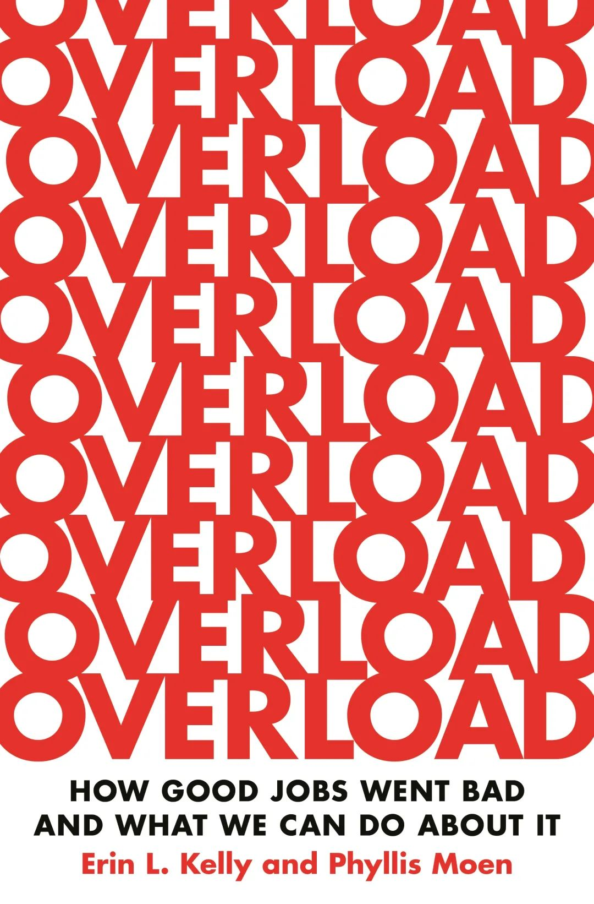
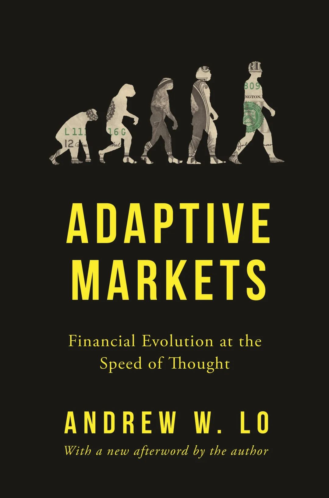
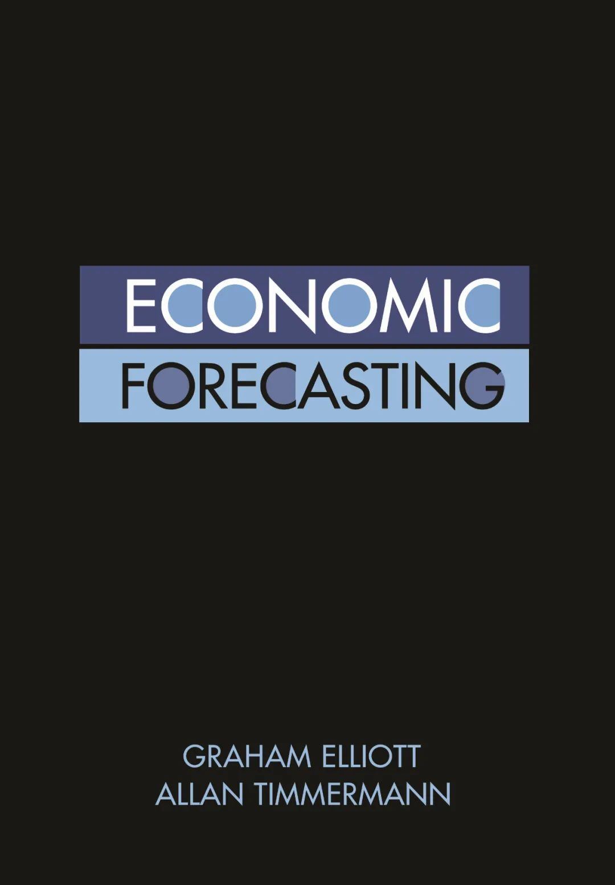
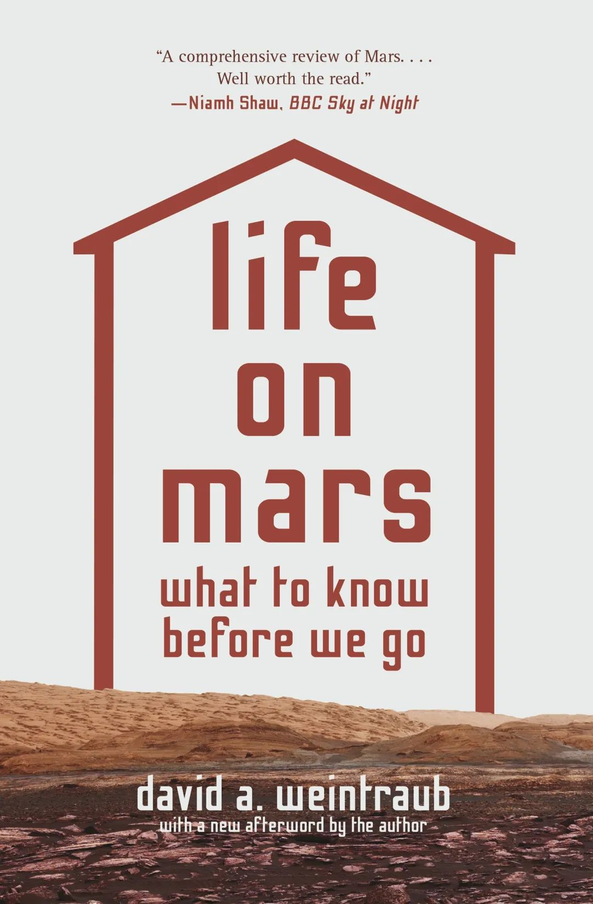
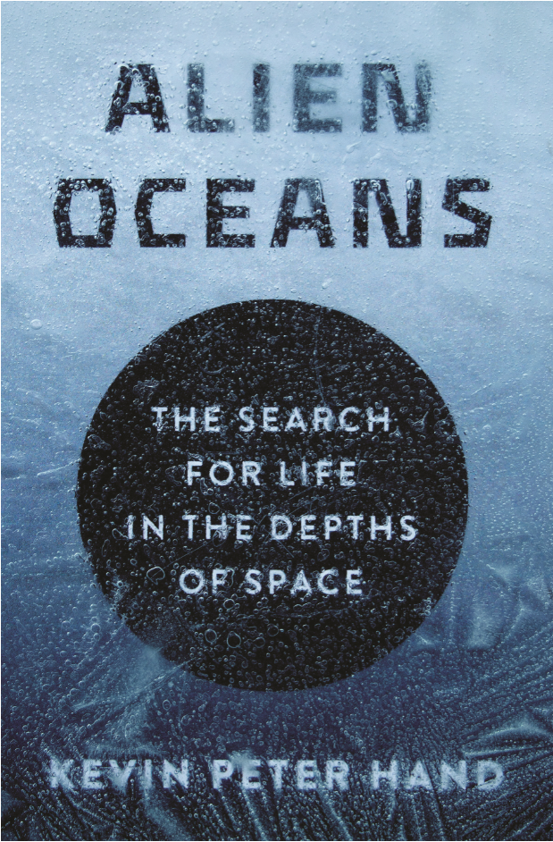
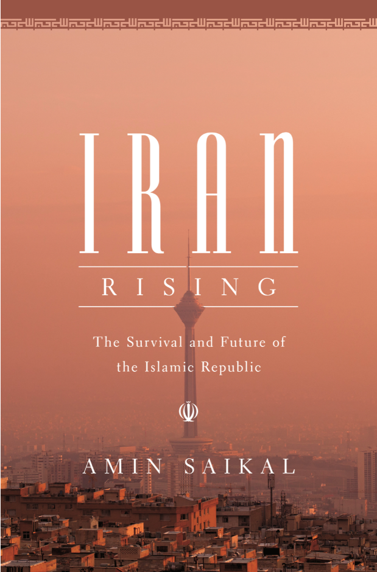
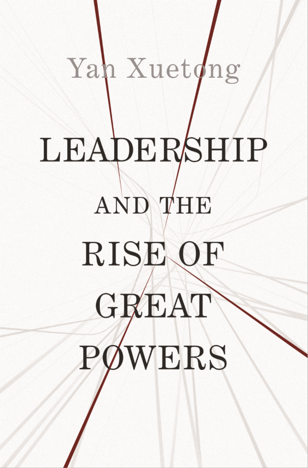
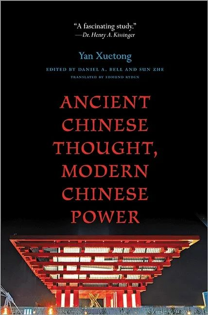
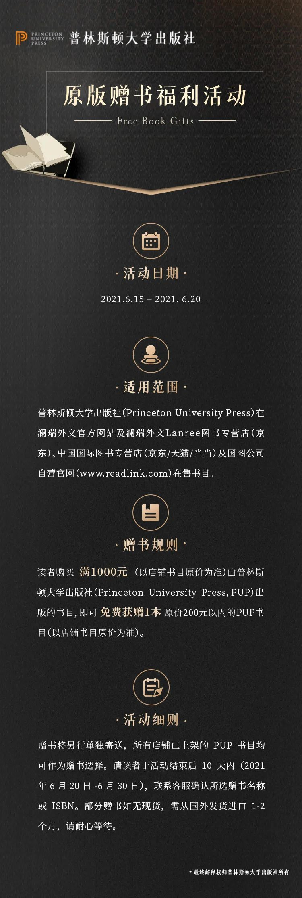

年中盘点|2021全球新闻大事件（及荐书清单）
收录于合集
以下文章来源于普林斯顿读书汇 ，作者PUP China
普林斯顿读书汇 .
普林斯顿大学出版社 (Princeton University Press) 旗下唯一公众号。自1905年起，PUP已成为全球顶尖学术成果与思想的传播者。关注我们，获取最新英文书摘，领军学者访谈，作者讲座活动。
2021年进度条已过半，普林斯顿大学出版社（Princeton University
Press）特别策划本期内容，梳理全球具有代表性的新闻事件，覆盖包罗万象的议题和知识框架——从青年学者“非升即走”凶案和三胎政策的热议看母职惩罚与社会支持系统；由币圈崩盘理解经济波动、市场失灵与预测；从苏伊士运河阻塞，深入探索地缘政治和全球贸易流动；自斋月愈演愈烈的巴以冲突窥见残酷战争下忍耐与抗争的民族……沿着历史的底稿回望过去，希望藉由新闻脉络，通过这份荐读清单，为大家带来洞见新知。
启迪思想之余，普林斯顿大学出版社联合原版书合作伙伴发起【折扣+赠书福利】，全品低至8折及原版赠书活动，陪伴大家在2021余下的半年中多读一本好书。
**活动详情见文末
拼多多22岁员工猝死，年轻人推崇的“躺平学”，以及三胎政策引发的社会支持体系热议
今年1月，一名拼多多的22岁员工在下班路途中晕倒猝死，引发新一轮对于“996”工作模式的热议。除了悲痛于年轻生命的消逝，我们更应反思，现代社会的“超负荷”工作产生、恶性社会事件频发的底层原因是什么？是否有可能从雇主的视角来解决这一问题？
从996福报论，到年轻人拒绝内卷崇尚“躺平学”，从一经发布即引起热议的“开放三胎政策”，再到复旦大学青年教师由“非升即走”制度触发的恶性凶案，看似孤立的新闻事件与当事人，实则是广大社会人群的面目与生活缩影。伴随着母职道德及职业发展惩罚的生育意愿的下降，映照出整个社会支持体系——婚恋、职业、教育、医疗、养老保障的系统性问题。
荐读书目

点击封面即可购买
▲ Overload：How Good Jobs Went Bad and What We Can Do about It 作者：Erin L.
Kelly and Phyllis Moen 出版时间：Oct 5, 2021
全球竞争之下，新兴市场（emerging market）的火并激烈，大厂们用996模式提高“人效比”，使得企业效益最大化，员工负荷过载（Overload）。来自MIT斯隆商学院的作者 Erin L. Kelly 及明尼苏达大学社会学教授 Phyllis Moen 提出，应对“超负荷工作”的解决之道不在于建立鼓励超负荷工作的企业文化，更不在于鼓励员工自行调整所谓的“工作生活平衡”，而是需要企业与员工一起，寻找新的提升效率的工作方式。
■ 点击封面即可购买
▲The Tolls of Uncertainty: How Privilege and the Guilt Gap Shape
Unemployment in America 作者：Sarah Damaske 出版时间: May 25, 2021
本书是对美国失业体系及性别与阶级对求职者生活的影响方式的重要调查，其中揭示的职场性别不平等的问题也广泛存在于全球大多数现代社会中。作者通过对宾夕法尼亚州100位失业者的采访，研究了失业对其家庭、财务、健康和求职的影响。书中揭示了失去工作的女性如何因“内疚差距”被迫加剧性别差距，而中产阶级的男性如何凭借阶层优势获得求职便利。
相关阅读：拿命换钱，伤害的不止是“打工人”
币圈崩盘式暴跌，57万人损失443亿
2021年5月，币圈投资者遭到血洗，迎来至暗时刻。5月19日晚7点起，加密货币世界发生了大崩盘。比特币从34000美元/枚跌到31000美元只用了16分钟，全天跌幅一度超30%，最低逼近29000美元/枚。其他加密货币也一并暴跌：以太坊、狗狗币均暴跌50%左右。24小时之内，57万人遭遇强制平仓，损失资金逾443亿元。
自2020的美股十天四次熔断，到2021币圈崩盘，对于普通投资者来说，如何理解经济波动，最大化收益？经济预测需要选择简单而稳健的模型来最佳模拟高度复杂和不断变化的数据，以下来自顶级经济学和金融学家的作品，带你学习应对经济波动的科学方法和视角。
荐读书目

▲ Why Stock Markets Crash: Critical Events in Complex Financial Systems
作者：Didier Sornette 出版时间: Mar 21, 2017
尝试解释市场失灵时，大多数人都试图查明崩盘前数小时、数天或数周内的触发机制，本书作者则提出了完全不同的观点：在灾难性事件发生前几月甚至几年才能够找到根本原因，这通常会转化为市场价格的加速上涨，也被称为“泡沫”。作者探讨了历史先例，以先进的物理和统计建模技术为基础进行复杂的分析，并预测“增长时代的终结”将在2050年到来。
■ 点击封面即可购买
▲ Adaptive Markets: Financial Evolution at the Speed of Thought： 作者：Andrew
W. Lo 出版日期：May 14, 2019
投资者是理性的，还是非理性的？市场是高效的，还是低效的？现代金融理论和行为经济学哪个才是更为正确的？作者将心理学、进化生物学等思路引入金融学，将投资者的理性与非理性、市场的高效与低效纳入一个统一的框架，建立了适应性市场假说，更好地解释了市场的稳定与波动、收益与损失、创新与监管之间的复杂关系。
■ 点击封面即可购买
▲ Economic Forecasting
作者：Graham Elliott and Allan Timmermann 出版时间：Apr 5, 2016
经济预测需要选择简单而强大的模型，来模拟高度复杂而不断发展的经济数据数据生成的过程。本书从决策理论和估计的角度给出了处理预测问题的综合方法，深入介绍了贝叶斯和非贝叶斯方法，还包括一系列用于生成点、区间和密度预测的尖端技术，对从业者和学生来说都是必不可少的佳作。
相关阅读：普林斯顿大学出版社 x 经管之家 |
经典经济学术著作
“天问一号”成功回传火星图像，人类探索火星之旅取得里程碑式进展
2021年是人类探索频繁探索火星的一年。2月18日，由美国航天局发射的火星车着陆，将采集火星地表的土壤样本，搜寻火星古生命的痕迹。4月23日，中国的天问一号探测器抵达火星，携带13种不同的科学负载，研究火星地表的乌托邦平原地区。阿联酋重达1350千克的希望号卫星抵达火星，研究这颗行星的大气与气候。
火星上是否有生命——这个问题的答案随着人类对火星探测的深入，变得越来越迫切。
荐读书目
点击封面即可购买
▲ Life on Mars: What to Know Before We Go 作者：David A. Weintraub 出版时间: Nov
3, 2020
火星上有生命吗？几个世纪以来，这个问题一直困扰着人类。随着航天机构准备开展前往火星的第一批载人项目，我们应当深入思考：那里可能已经居住着怎样的生命，而人类是否有权进入？这是我们将人类送往火星前需要思考的深刻道德和伦理问题。
■ 点击封面即可购买
▲ Alien Oceans: The Search for Life in the Depths of Space
作者：Kevin Hand 出版时间：Sep 21, 2021
木星和土星的几个卫星被厚厚的冰川所覆盖，而在冰壳之下潜藏着浩瀚的海洋。这些海洋的历史可能和地球一样久远，其所蕴含的液态水可能是地球总量的50多倍。这些海洋深处会有生命存在吗？本书是孤独的人类文明对外星发出的呼喊，展现了激动人心的科学探索。
相关阅读：NASA：除了火星，还有哪里值得我们再次启程？
苏伊士运河因搁浅事故关闭，中欧海运贸易通道暂时中断
开罗时间3月23日，台湾一艘超大型集装箱船，在苏伊士运河北部航段横向搁浅，造成水路双向封航，累计400余艘船舶滞留，这是苏伊士运河半个世纪以来发生的最严重的航道阻断事件。3月29日，堵塞7天之后的河道最终被疏通，各方将赔偿事宜提上日程，埃及方面将日本的货船扣押，直至船东支付高达9亿的赔偿金额。
苏伊士运河是世界海航的咽喉要道，连接亚非欧三大洲，沟通大西洋、印度洋和太平洋。早在公元前2000年，古埃及或已修建连接红海和尼罗河的灌溉水渠，而后19世纪的法国制图师曾发现古老的南北运河的残迹。1869年，苏伊士运河首次通航；如今，每年10%的世界贸易、60%中欧货物贸易、运往欧美的中东石油都从苏伊士运河经过。
此次堵船事件不仅使得被堵船只货物损失惨重，地缘政治、国际贸易与社会冲突交织在一起。以下书目从国际贸易与国家间政治权力关系，解读要素流动如何影响自由贸易及产业发展。
荐读书目

点击封面即可购买
▲ International Trade and Political Conflict: Commerce, Coalitions, and
Mobility
作者：Michael J. Hiscox 出版时间：Aug 25, 2002
本书是一部探究贸易政策极其影响因素的伟大著作。阶级冲突和群体竞争谁更为普遍？这是政治经济学领域永恒的辩题。本书深入探讨这一辩题，以全新的视角探索了六个国家在过去两百多年间的政治贸易史，揭示了贸易政策的关键影响因素——要素流动性本书曾获2003年度William
H. Riker图书奖。
■ 点击封面即可购买
▲The Roman Predicament: How the Rules of International Order Create the
Politics of Empire
作者：Harold James 出版时间：Mar 16, 2008
作者探讨了“罗马困境”这一悖论，即全球社会的和平与繁荣取决于国际规则体系，但这种体系将不可避免地导致国内冲突、国际对抗甚至战争。在疫情冲击全球经济、国际秩序受到严重挑战的今天，本书的对于政治经济学史具有启发意义。
相关阅读：全球贸易与帝国崛起：茶叶、瓷器和罂粟花如何塑造历史？
斋月前后，巴以冲突加剧导致大量群众伤亡
2021年上半年，东耶巴以冲突路撒冷、加沙和西岸的巴以冲突不断。四月中旬斋月以来，巴勒斯坦和以色列双方冲突持续升级，大量群众伤亡。5月7日，阿克萨清真寺附近的巴勒斯坦抗议者与以色列警方发生冲突，以色列取消了随后的耶路撒冷日，派军警进驻东巴勒斯坦，并开始以武力镇压示威群众。5月10日，巴勒斯坦武装组织向以色列发射上百枚火箭弹，引燃近年来双方最大规模军事冲突。
我们梳理普林斯顿大学出版社中东研究相关书目，呼吁学界与大众以“人类命运共同体”的共情，关注巴勒斯坦和以色列的局势，从奥斯曼帝国征服到以色列建国，理解巴以发展的历史以及生活在中东这片土地上哭泣、抗争、坚韧生活的人民。
荐读书目
 **
**
**
▲ Iran Rising: The Survival and Future of the Islamic Republic
作者：Amin Saikal 出版时间：Feb 23, 2021
这是一本关于伊斯兰共和国如何幸存，以及为什么它在中东乃至全世界扮演关键角色的权威著作。1979年，伊朗爆发伊朗伊斯兰革命，使伊斯兰教取代了君主政体。许多观察家预测，革命动乱将在未来几年使这个国家瘫痪。然而自那以后的几十年里，伊朗在中东乃至更广阔的世界中一跃成为关键角色。伊朗问题专家Amin
Saikal描述了伊斯兰共和国如何在未消停的内战、西方制裁等严峻挑战中生存。
本书被安徽大学中东研究界编入20本关于中东的基础读物之一。
■ 点击封面即可购买
▲ A History of Palestine: From the Ottoman Conquest to the Founding of the
State of Israel 作者：Gudrun Krämer 出版时间：Mar 14, 2011
本书是一部探究巴勒斯坦历史的伟大著作。本书首次用英语追溯了巴勒斯坦从奥斯曼帝国时期到二十世纪中叶的政治文化演变史，聚焦于社会经济因素，研究了犹太教、基督教和伊斯兰教教徒曾赋予巴勒斯坦的意义，为巴勒斯坦的演变史提供了丰富而详尽的注解。本书作者曾获2010年度格尔达·汉高基金会Gerda
Henkel奖项。
■
▲ Identity and Religion in Palestine: The Struggle between Islamism and
Secularism in the Occupied Territories
作者：Loren D. Lybarger 出版时间：Aug 19, 2012
本书是一部探究巴勒斯社会动态的伟大著作。本书探讨了伊斯兰运动及其与世俗民族主义派系的竞争对巴勒斯坦国民的身份认同的影响。巴勒斯坦社如何受宗教、政治、阶层、年龄和地区影响而产生分裂？面对如此困境，巴勒斯坦激进分子又是如何重建身份认同的？作者以其亲身经历回答了这些问题，揭示了巴勒斯坦国民的内部斗争和忠诚度的差异性，以及伊斯兰主义者和世俗民族主义者之间的矛盾。本书深入探究了巴勒斯坦复杂的社会动态，堪称巴勒斯坦国别研究领域的必读经典。
■ 点击封面即可购买
▲ In Search of Israel: The History of an Idea
作者：Michael Brenner 出版时间：Mar 24, 2020
本书是一部关于犹太国家争论的全新历史。许多犹太复国主义者主张建立一个低调的犹太国家。然而，1948年诞生于种族灭绝的废墟的以色列可谓是不同凡响。本书作者揭示了犹太民族期望自己的国家既寻常又不寻常的矛盾心理，正是这种心理影响了以色列如今的自我定位和国际形象。本书曾获杰拉德（Gerrard）和埃拉·伯曼纪念奖（Ella
Berman Memorial Award），曾入围2018年度国家犹太历史书籍奖（Jewish Book Award in History）。
相关阅读：2020年度盘点：普林斯顿政治与国际关系书单
美多地爆发亚裔被袭事件，针对亚裔的种族仇恨愈演愈烈
疫情以来，美国社会对亚裔的仇视情绪越发高涨，暴力袭击事件频发。3月16日下午，亚特兰大地区发生种族仇恨枪击事件，六名亚裔女性身亡。此后，3月末的纽约地铁和5月的加州旧金山市，接连发生多起针对亚裔的仇视事件，令美国的亚裔社区陷入担忧甚至恐慌。
为何美国的种族歧视始终难以消弭甚至愈演愈烈？美国作为一个多种族融合的典型国家，种族冲突是长久以来的突出问题，普林斯顿大学出版社针对种族主义（Racism）相关议题的研究深入而广泛：为什么20世纪制度化的极端形式的种族主义显现？放眼美国之外，亚洲与非洲的种族主义是怎样不同的形式？而种族隔离下的南非、纳粹德国和美国南部又有什么共同之处？
荐读书目

点击封面即可购买
▲ Racism: A Short History
作者：George M. Fredrickson 出版时间：Sep 15, 2015
本书作者调查了西方种族主义从中世纪晚期至今的历史，在跨越时空的广度下探讨种族主义，极具启示意义。作者从中世纪的反犹主义开始，追溯随欧洲扩张主义和非洲奴隶贸易蔓延开的种族主义思想，同时，描述了启蒙运动和十九世纪浪漫民族主义如何为奴隶制和犹太解放的辩论提供了新的知识背景。
入围2003年《CHOICE》“杰出学术专著(Outstanding Academic Titles)”获奖名单。
■ 点击封面即可购买
▲ Racisms: From the Crusades to the Twentieth Century 作者：Francisco
Bethencourt 出版时间：Sep 15, 2015
本书是首部全面的、具有开创性的种族主义历史著作。作者指出，必须在社会等级制度和当地条件背景下看待种族主义，所有种族主义都是由垄断特定经济和社会资源的政治计划引发的。本书侧重于西方世界，但也对比探讨了亚非的种族歧视和隔离，并探讨奴役、强迫移徙和种族清洗的例子，同时分析种族歧视和隔离如何得到辩护。
相关阅读：6名亚裔女性在美遭枪杀，种族仇恨为何愈演愈烈？
美国国会遭冲击、拜登上任半年后，中美关系将走向何方？
华盛顿当地时间2021年1月6日，特朗普的支持者在美国国会与警方发生暴力冲突，随后冲入美国国会大厦引发骚乱，致使国会认证拜登胜选的程序不得不中止，和平权力交接中断。
如今，拜登履新半年，中美关系的前景如何？清华大学国际关系学院院长阎学通在今年4月的采访中，谈及中美关系、拜登政府对华政策、疫情下的国际秩序演变和国际领导力竞争。阎学通教授指出，拜登给中国带来的压力比特朗普更大，对比特朗普的单边主义政策，拜登上台后实行的排他性的多边主义，实际上主要是在排斥中国，其给中国造成的国际压力要远远大于特朗普的单边主义的对华政策。
荐读书目

点击封面即可购买
▲ Leadership and the Rise of Great Powers： 作者：阎学通 出版时间: Dec 22, 2020
传统的现实主义理论对国家间行为的逻辑和利益取舍作出了解释，却较少关注大国崛起和国际秩序的转变。本书作者将目光投向这一现象，创造性地提出道义现实主义理论，通过政治领导力的维度对大国崛起和衰落进行了分析。
政治领导力是一国的政治领导团队驾驭国内政治与国际政治的判断、执行与评估能力。作者追溯中国历史，提出了无为型、保守型、奋发有为型与咄咄逼人型四种领导力类型，并提出，对于当今中国而言，王道模式是发挥政治领导力，寻求国际秩序转型的最优选项。
■ 点击封面即可购买
▲ Ancient Chinese Thought, Modern Chinese Power 作者：阎学通 出版时间：Aug 25, 2013
中国的崛起是二十一世纪世界政治格局发展的重要一环。中国的发展前景如何？将对世界产生怎样的影响？中国最有影响力的外交政策学者阎学通在此书中从中国的视角出发，探索了中国未来的发展愿景。本书探究了中国传统政治思想对于未来的启示，同时展望了“北京共识”在国际关系中的形成与发展。
相关阅读：拜登正式履新，一文回顾美国大选的风风雨雨
**福利赠书及折扣
**
2021年6月16日-6月20日，普林斯顿大学出版社（Princeton University Press）囤书折扣+赠书福利—— 全品低至8折起 ，叠加 原版赠书福利 。
*以下所有店铺 所有普林斯顿大学出版社 的书目，均享受 折扣及赠书 活动
活动一：全品囤书折扣
澜瑞 Lanree 外文 重点推荐书目 85折 叠加 1000-60元 优惠券
扫码直达
中国国际图书专营店 低至 8折
200-40=10元店铺券+30满减400-80=20元店铺券+60满减600-120=30元店铺券+90满减800-150=30元店铺券+120满减1000-200=50元店铺券+150满减2000-420=120元店铺券+300满减3000-650=200元店铺券+450满减
扫码直达
活动二：原版福利赠书

-END-